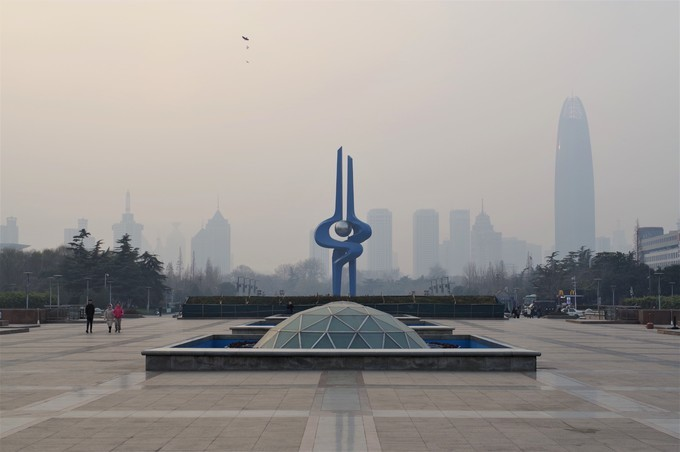
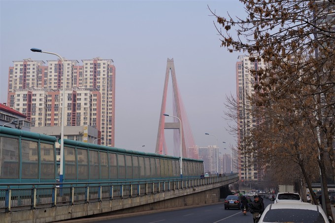
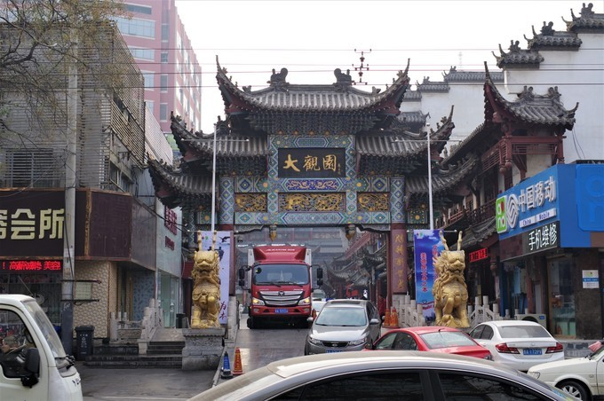
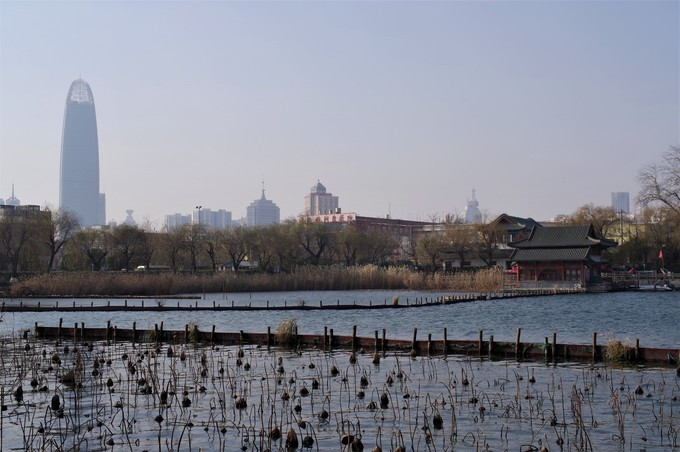
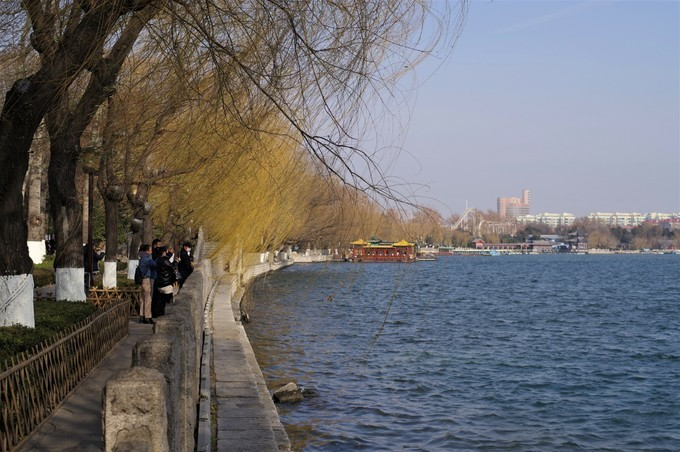
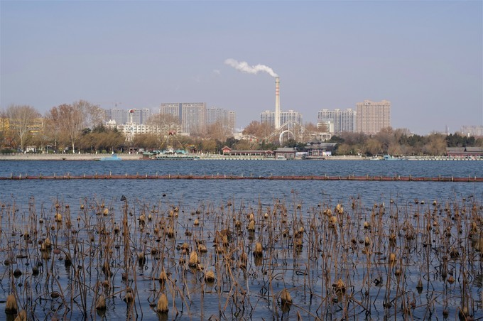

旅游攻略
旅游攻略
555天中国饮食探索之行——第186~188天 济南
·第一天 泉城 济南 ，太耳熟的地方了。如果这些年的教材没有发生太大变化，随便在什么地方拉上一个小学生，估计都能说出 济南 的千 佛山 、大明湖、趵 突泉 。对于 济南 这样一座有山有林有江泉的城市而言，它确实担得起这样的盛名。只可惜 济南 的美，大都不存在于这个季节。 说回 济南 的吃，也同样是大有来头。作为曾经的宫廷菜，鲁菜辉煌了几百年，光是这历史便是其他菜系无法比拟的。而 济南 菜作为鲁菜几大分支之一，又为鲁菜家族贡献了如九转大肠、油爆双脆、糖醋鲤鱼等最闻名遐迩的几道菜。不过，由于一人出行难食大菜的掣肘，这三天我也仍将目光主要放到更家常、更一日三餐的
济南 吃食上，正儿八经的鲁菜只能简单品上二三。 第一天，从一碗“名不符实”的早点说起。


 第二天 真的勇士，敢于在温度几乎零下的天漫游大明湖边。昨日的祈愿竟应了验，风虽依旧萧萧，空气里的灰色被擦了去，泉城之美虽未当时，还是令我不由得赞叹了。 一番“面红耳赤”的游览后，终于下定决心走进一家鲁菜馆，点上一道期待已久的菜，将其作为今日的头牌开始介绍。


